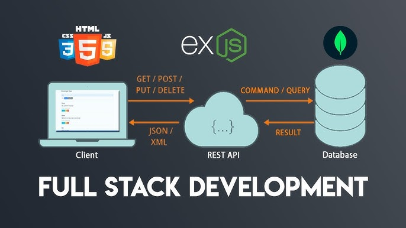

Starting with software development seemed intimidating at first, but I soon realized how fun and rewarding it can be.
For more resources, check out W3Schools.
In web development, front-end and back-end refer to different roles and responsibilities.
To learn more, visit MDN Web Docs.
HTML5 allows us to create structured, semantic, and accessible web pages easily.
To explore HTML5 in depth, check the official HTML5 specification.